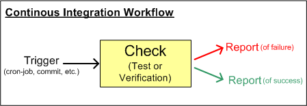

With Continous Integration you send your work to a central place and a checking is being done which tells you if your stuff still works for itself and together with the other parts of the system. This kind of check should be done quick and often (to keep the feedback loop short) so it is mostly done automatically by tools. Martin Fowler already gives a good introduction to this practice, and this book gives even more detailed information, so I won’t cover already discussed topics. For myself I found the idea of Continous Integration so universal, that it can even be applied to other work bits which aren’t directly connected to source code. This way quality of other work artifacts can be enhanced.
As a example just think of the important documentations snippets you are working on (I hope you do…), wouldn’t it be nice if the was a kind of checker which would help you to keep spellings or consistencies right without you manually scrolling the whole document back and forth? This way you would save an often unexpected (difficult to estimate) pig pile of work which usually appears at the release deadline when document needs to be finished. You could argue that if the tool wouldn’t offer such a check you could extend it by a self written plugin yourself to get a very close integration. On the other hand this is often not feasible: Either the tool is not meant to be extended, it is closed source or the effort to be spent for writing a plugin is just too high to equal the cost. You again could argue that faced with such problems a switch to a better tool should be done, but this is even more doubtful: First of all in very many cases a switch of a tool is connected with high effort (total cost of ownership: training, migration of data, evaluation etc.), and further more you generally will hardly (if even never) find a tool which fulfills all your needs to 100% anways. So a more lightweight approach could be a better alternative: Integration of little self written tools which connect to interfaces of your main one. In the case of Continous Integration this would happen by creating a little checker/reporting-tool which in turn scans users input for lurking errors and runs on a regular basis. Thus the feedback loop is short (iteration is one of the keys of software engineering) and thus many errors/misbehaviour can be prevented from keeping too long inside the system and quality is ensured from the beginning on.

Let’s head to another example: I recently used the concept of Continous Integration to improve the quality of my homepage: As you write content for the web you often write some html bits and use hyperlinks quite often. In wordpress’ case you usually do that with not very edit-friendly built-in wordpress editor, which does not check the html bits you filled in. So just automatically quite a few broken links creeped in. With me this happened quite often (forgetting opening/closing tags, accidently omitting http://, completely mistyped links, etc.). The discovery + correction of these links had been quite annoying, boring and time consuming. Further more the discovery was more by coincidence as by a structured search. Whilst being bored searching for these sneaky links I came to the idea that this kind of scan could be easily, much better and quickly performed by a script. So I changed the direction and headed my way to an automatic scan: First of all a kind of enabling point was neccessary to easily get access to all pages of my homepage. For this the sitemap feature of wordpress got very handy, where you can get all pages of your site in a structured well parseable XML-document. Armed with this all pages and its hyperlinks could by retrieved easily. Having all existing hyperlinks of my homepage the assertion of the HTTP GET response code of respective link was even more obvious. For this tooling task I used Groovy for its short easy to read syntax and its missing compiling and low deploying neccessities (just guess what long and verbose source-code would have been need when it had been done in Java…). Of course I do favor Java (static type check) when it comes to bigger systems for maintenance reasons but for everyday scripting tasks Groovy or other alternatives (Python, Ruby etc.) a really the best way to go.
Just have a look at following code to see how straight forward it is to build a Continous Integration helper tool. You will notice that only the check part is done of following script (see the middle item of above picture). So what is still missing is a proper trigger (like cron-job for each day) and a better report functionality (like mail-notification instead of stdout print).
def static HOMEPAGE=“YOUR_WORDPRESS_HOMEPAGE”
//for performance, only visit link once
def linksVisited=[]
def index=0
println “Starting link check for $HOMEPAGE”
def urlset=new XmlSlurper().parseText(new URL(“http://$HOMEPAGE/sitemap.xml”).text)
urlset.url.each{ sitemapEntry ->
def linkFrom=sitemapEntry.loc.text()
retrieveLinks(new URL(linkFrom).text).each{
print “${index++} “
if(!linksVisited.contains(it)){
checkLink(it,linkFrom)
linksVisited << it
}
}
}
def retrieveLinks(html){
def links=[]
(html =~ /href=“(.*?)”/).each { whole, link -> links << link }
return links
}
def isBrokenLink(url){
def responseCode=new URL(url).openConnection().getResponseCode()
responseCode.toString() =~ “^(4|5)”
}
def urlAlright(url,closure){
try{
new URL(url)
}catch(Exception){
closure(url)
return false
}
return true
}
def checkLink(linkTo,linkFrom){
if(urlAlright(linkTo,{println “Wrong URL Pattern: $linkTo inside $linkFrom”}))
if(isBrokenLink(linkTo))
println “ERROR: BROKEN LINK $linkTo. Referenced from $linkFrom”
}
Of course this kind of broken link check is not restricted to a XML-sitemap. Another enabling point for quering your html content could be a direct database access, whereas you would need to know the database schema of wordpress in a more detailed way. I am running this kind of check each week and already found out quite a few broken links.
Surely these automatic checks cannot reveal all errors inside a system (who the hell checks if my posts make sense at all…) but they definitely help to let people to concentrate on other things which cannot be achieved by computers so far (like sematics, comprehensibility, etc.).
What about you, what kind of Continous Integration use cases are you employing?

0 responses
You must log in to post a comment.